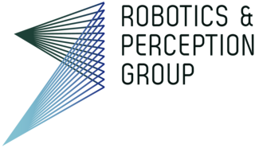

<!DOCTYPE html>
<html>

<head>
  <meta charset="utf-8" />
  <link rel="stylesheet" type="text/css" href="styles.css">
  <meta name="viewport" content="width=device-width, initial-scale=1.0">

  <script type="text/javascript" src="js/eventemitter2.min.js"></script>
  <script type="text/javascript" src="js/roslib.min.js"></script>
  <!-- <script type="text/javascript" src="http://static.robotwebtools.org/roslibjs/current/roslib.min.js"></script> -->
  <!-- <script type="text/javascript" src="https://cdnjs.cloudflare.com/ajax/libs/nipplejs/0.7.3/nipplejs.js"></script> -->
  <script type="text/javascript" src="js/nipplejs.js"></script>

  <script type="text/javascript" type="text/javascript">

    // ToDo:
    // Add yaw and vel_z control.
    // Check when to send the command. [Activate Button]

    // config
    // var base_computer_ip = "192.168.1.121";
    // var base_computer_ip = "192.168.1.117";
    // var base_computer_ip = "192.168.213.118";
    // var base_computer_ip = "192.168.100.92";
    // var base_computer_ip = "192.168.200.19";
    // var base_computer_ip = "192.168.200.3";
    var base_computer_ip = "192.168.213.118";


    // var image_url = "http://" + base_computer_ip +
    //   ":8080/snapshot?topic=/web_interface/svo/image0";

    var imu_angle_limit = 30;         // Phone IMU angle limit in degrees.
    var imu_angle_deadzone = 10;       // Deadzone on IMU angle for stable hover.
    var max_control_velocity = 0.5;   // Maximal velocity to scale angle to.
    var max_linear_x = 10.0;
    var max_linear_y = 10.0;
    var max_linear_z = 5.0;
    var max_yaw_rate = 1.0;
    var touching = 0;
    var touching_start_time = Date(0);
    var vel_x = 0.0;
    var vel_y = 0.0;
    var vel_z = 0.0;
    var yaw_rate = 0.0;
    var last_arm_press_time = Date(0);
    var last_off_press_time = Date(0);

    // Connecting to ROS
    // -----------------

    var ros = new ROSLIB.Ros({
      url: 'ws://' + base_computer_ip + ':9090'
    });

    ros.on('connection', function () {
      console.log('Connected to websocket server.');
    });

    ros.on('error', function (error) {
      console.log('Error connecting to websocket server: ', error);
    });

    ros.on('close', function () {
      console.log('Connection to websocket server closed.');
    });

    var armPub = new ROSLIB.Topic({
      ros: ros,
      name: '/web_interface/arm',
      messageType: 'std_msgs/Bool'
    });

    var startPub = new ROSLIB.Topic({
      ros: ros,
      name: '/web_interface/start',
      messageType: 'std_msgs/Bool'
    });

    var velocityCommandPub = new ROSLIB.Topic({
      ros: ros,
      name: '/web_interface/vel_cmd',
      messageType: 'geometry_msgs/TwistStamped'
    });

    var landPub = new ROSLIB.Topic({
      ros: ros,
      name: '/web_interface/land',
      messageType: 'std_msgs/Bool'
    });

    var offPub = new ROSLIB.Topic({
      ros: ros,
      name: '/web_interface/off',
      messageType: 'std_msgs/Bool'
    });

    var forceHoverPub = new ROSLIB.Topic({
      ros: ros,
      name: '/web_interface/force_hover',
      messageType: 'std_msgs/Bool'
    });

    var loadTrajPub = new ROSLIB.Topic({
      ros: ros,
      name: '/web_interface/load_traj',
      messageType: 'std_msgs/Bool'
    });

    var startTrajPub = new ROSLIB.Topic({
      ros: ros,
      name: '/web_interface/start_traj',
      messageType: 'std_msgs/Bool'
    });

    var telemetry_listener = new ROSLIB.Topic({
      ros: ros,
      name: '/web_interface/telemetry',
      messageType: 'dodgeros_msgs/Telemetry'
    });
    telemetry_listener.subscribe(telemetryCallback);

    var state_estimate_listener = new ROSLIB.Topic({
      ros: ros,
      name: '/web_interface/state_estimate',
      messageType: 'dodgeros_msgs/QuadState'
    });
    state_estimate_listener.subscribe(stateEstimateCallback);


    // Subscribers callbacks
    // ----------------------

    function telemetryCallback(msg) {
      document.getElementById("battery_voltage").textContent = "Battery Voltage: " +
        msg.voltage;
    }

    function stateEstimateCallback(msg) {
      document.getElementById("quad_state").textContent = "Position:  " +
        "x=" + Math.round(100 * msg.pose.position.x) / 100 + ", " +
        "y=" + Math.round(100 * msg.pose.position.y) / 100 + ", " +
        "z=" + Math.round(100 * msg.pose.position.z) / 100;
    }


    // Image handler
    // ----------------------

    // function updateImage() {
    //   img_viewer.src = image_url + "#" + new Date().getTime();
    //   setTimeout(updateImage,500);
    // }


    // Button callbacks
    // ----------------------

    // Arm quadrotor
    function arm() {
      var msg = new ROSLIB.Message({
        data: true
      });
      armPub.publish(msg);
    }

    // Take off
    function start() {
      var msg = new ROSLIB.Message({
        data: true
      });
      startPub.publish(msg);
    }

    // Land quadrotor
    function land() {
      var msg = new ROSLIB.Message({
        data: true
      });
      landPub.publish(msg);
    }

    // OFF
    function off() {
      var msg = new ROSLIB.Message({
        data: true
      });
      offPub.publish(msg);
    }

    function forceHover() {
      var msg = new ROSLIB.Message({
        data: true
      });
      forceHoverPub.publish(msg);
    }

    function loadTraj() {
      var msg = new ROSLIB.Message({
        data: true
      });
      loadTrajPub.publish(msg);
    }

    function startTraj() {
      var msg = new ROSLIB.Message({
        data: true
      });
      startTrajPub.publish(msg);
    }


    move = function (linear_x, linear_y, linear_z, angular) {
      var twist = new ROSLIB.Message({
        header: {},
        twist: {
          linear: {
            x: linear_x,
            y: linear_y,
            z: linear_z
          },
          angular: {
            x: 0,
            y: 0,
            z: angular
          }
        }
      });
      console.log("publishing twist");
      velocityCommandPub.publish(twist);
    }

    createJoystick = function () {
      var options = {
        zone: document.getElementById('zone_joystick'),
        threshold: 0.1,
        position: { left: '20%', top: '50%' },
        mode: 'static',
        size: 150,
        color: "red",
      };
      manager = nipplejs.create(options);

      linear_x = 0;
      linear_y = 0;

      self.manager.on('start', function (event, nipple) {
        console.log("Movement start");
        timer = setInterval(function () {
          move(vel_x, vel_y, vel_z, yaw_rate);
        }, 25);
      });

      self.manager.on('move', function (event, nipple) {
        console.log("Moving");

        max_distance = 75.0; // pixels;
        vel_x = max_linear_x * nipple.distance / max_distance * Math.sin(nipple.angle.radian);
        vel_y = -max_linear_y * nipple.distance / max_distance * Math.cos(nipple.angle.radian);
        console.log(nipple.angle.radian);
      });

      self.manager.on('end', function () {
        console.log("Movement end");
        vel_x = 0.0;
        vel_y = 0.0;
        if (timer) {
          clearInterval(timer);
        }
        self.move(vel_x, vel_y, vel_z, yaw_rate);
      });
    }
    createJoystick2 = function () {
      var options = {
        zone: document.getElementById('zone_joystick2'),
        threshold: 0.1,
        position: { left: '80%', top: '50%' },
        mode: 'static',
        size: 150,
        color: "green",
      };
      manager2 = nipplejs.create(options);

      self.manager2.on('start', function (event, nipple) {
        console.log("Movement start");
        timer = setInterval(function () {
          self.move(vel_x, vel_y, vel_z, yaw_rate);
        }, 25);
      });

      self.manager2.on('move', function (event, nipple) {
        console.log("Moving");

        max_distance = 75.0; // pixels;
        vel_z = max_linear_z * nipple.distance / max_distance * Math.sin(nipple.angle.radian);
        yaw_rate = -max_yaw_rate * nipple.distance / max_distance * Math.cos(nipple.angle.radian);
        console.log(nipple.angle.radian);
      });

      self.manager2.on('end', function () {
        console.log("Movement end");
        vel_z = 0.0;
        yaw_rate = 0.0;
        if (timer) {
          clearInterval(timer);
        }
        self.move(vel_x, vel_y, vel_z, yaw_rate);
      });
    }
    window.onload = function () {
      createJoystick();
      createJoystick2();
    }


    // Event listeners
    // ----------------------
    // window.addEventListener('deviceorientation', sendPhoneOrientation);
    // document.addEventListener('touchstart', touchEventStart, false);
    // document.addEventListener('touchend', touchEventEnd, false);

  </script>

</head>

<body class="hideOnTilt">
  <!-- onload="updateImage()"> -->
  <!-- 
  <h2 id="h2Commands">Commands</h2>
  <div class="btn-group">
    <button class="button" onclick="arm()">Arm</button>
    <button class="button" onclick="start()">Start</button>
    <button class="button" onclick="land()">Land</button>
    <button class="button" onclick="forceHover()">Force Hover</button>
    <button class="button" onclick="loadTraj()">Load Traj.</button>
    <button class="button" onclick="startTraj()">Start Traj.</button>
  </div>
  <button class="button" id="off_button" onclick="off()">Off</button>
  <br>
  <br>
  <h2>State Information</h2>
  <p id="quad_state">No state estimate from drone yet.</p>
  <p id="battery_voltage">No battery voltage yet.</p> -->

  <p style="margin-bottom:2cm;"> </p> <!-- cheap hack to add some white space -->

  <div id="zone_joystick"></div>

  <p style="margin-bottom:2cm;"> </p> <!-- cheap hack to add some white space -->

  <div id="zone_joystick2"></div>

  <!-- <h2>Image</h2>
   -->
  <!-- img src="imagenotfound.gif" alt="Image not found" onerror="this.onerror=null;this.src='imagefound.gif';" / -->
</body>

</html>